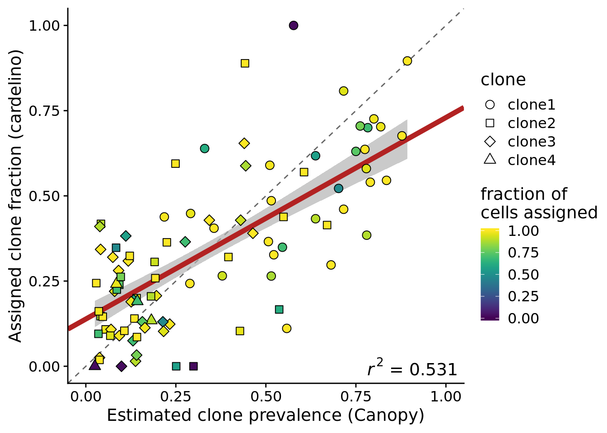
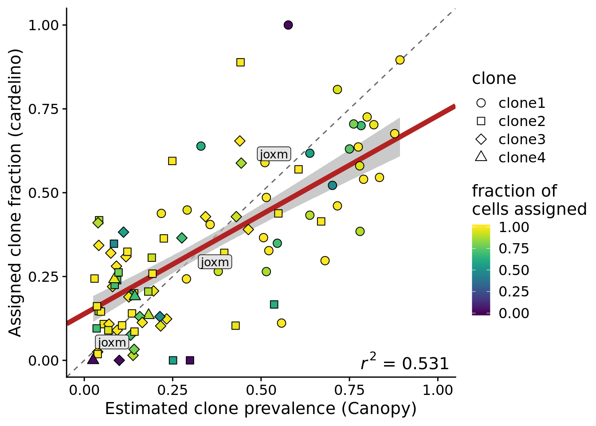
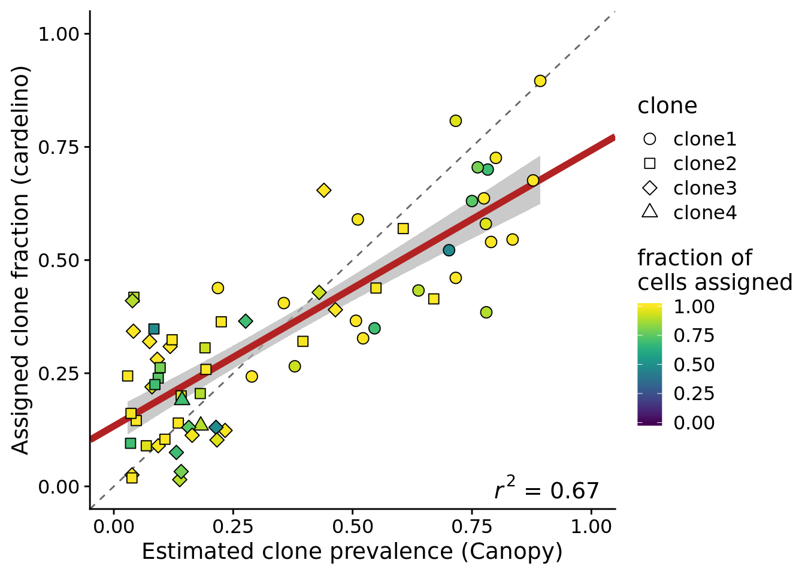
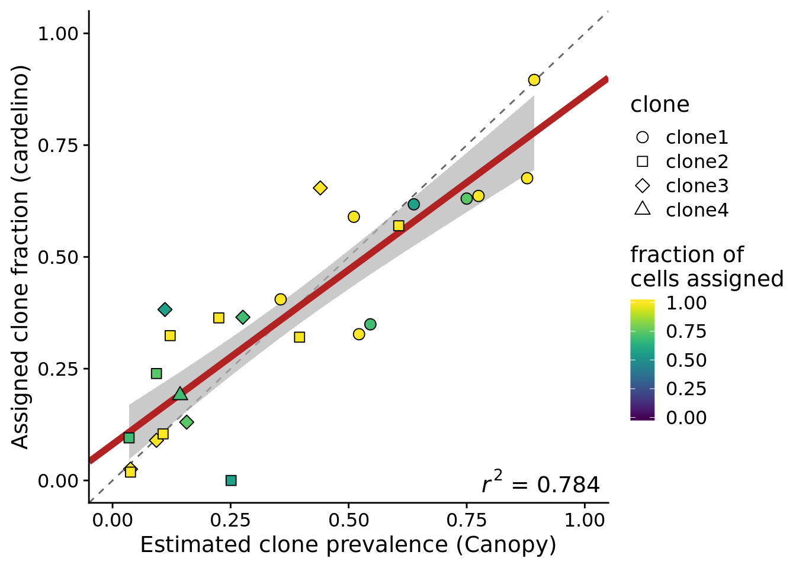
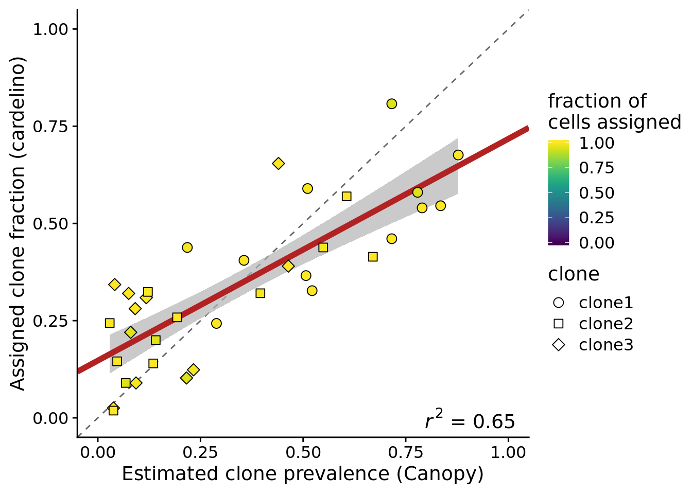
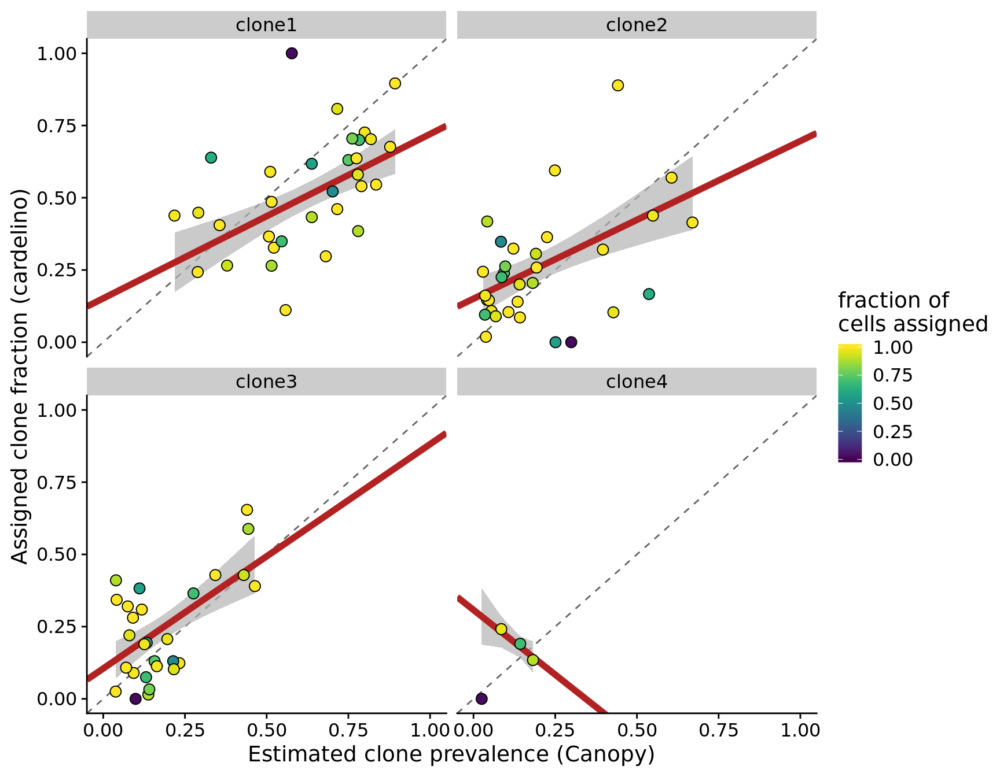
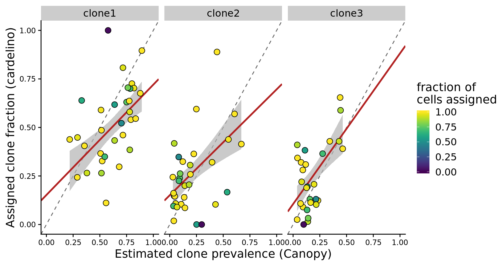
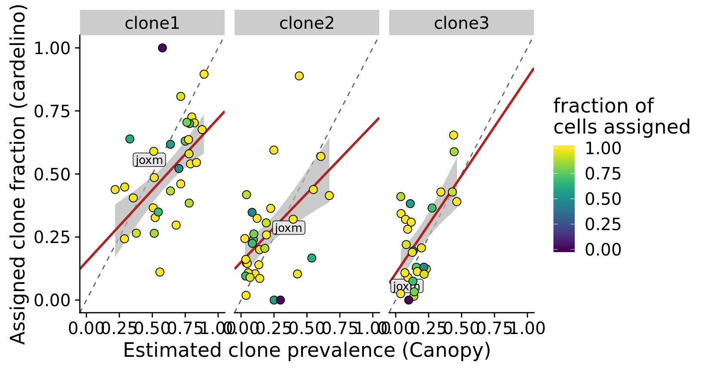
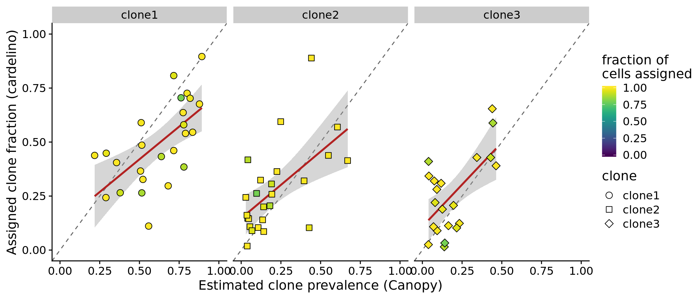

Last updated: 2019-10-30
Checks: 7 0
Knit directory: fibroblast-clonality/
This reproducible R Markdown analysis was created with workflowr (version 1.4.0). The Checks tab describes the reproducibility checks that were applied when the results were created. The Past versions tab lists the development history.
Great! Since the R Markdown file has been committed to the Git repository, you know the exact version of the code that produced these results.
Great job! The global environment was empty. Objects defined in the global environment can affect the analysis in your R Markdown file in unknown ways. For reproduciblity it’s best to always run the code in an empty environment.
The command set.seed(20180807) was run prior to running the code in the R Markdown file. Setting a seed ensures that any results that rely on randomness, e.g. subsampling or permutations, are reproducible.
Great job! Recording the operating system, R version, and package versions is critical for reproducibility.
Nice! There were no cached chunks for this analysis, so you can be confident that you successfully produced the results during this run.
Great job! Using relative paths to the files within your workflowr project makes it easier to run your code on other machines.
Great! You are using Git for version control. Tracking code development and connecting the code version to the results is critical for reproducibility. The version displayed above was the version of the Git repository at the time these results were generated.
Note that you need to be careful to ensure that all relevant files for the analysis have been committed to Git prior to generating the results (you can use wflow_publish or wflow_git_commit). workflowr only checks the R Markdown file, but you know if there are other scripts or data files that it depends on. Below is the status of the Git repository when the results were generated:
Ignored files:
Ignored: .DS_Store
Ignored: .Rhistory
Ignored: .Rproj.user/
Ignored: .vscode/
Ignored: code/.DS_Store
Ignored: code/selection/.DS_Store
Ignored: code/selection/.Rhistory
Ignored: code/selection/figures/
Ignored: data/.DS_Store
Ignored: logs/
Ignored: src/.DS_Store
Ignored: src/Rmd/.Rhistory
Untracked files:
Untracked: .dockerignore
Untracked: .dropbox
Untracked: .snakemake/
Untracked: Rplots.pdf
Untracked: Snakefile_clonality
Untracked: Snakefile_somatic_calling
Untracked: analysis/.ipynb_checkpoints/
Untracked: analysis/assess_mutect2_fibro-ipsc_variant_calls.ipynb
Untracked: analysis/cardelino_fig1b.R
Untracked: analysis/cardelino_fig2b.R
Untracked: code/analysis_for_garx.Rmd
Untracked: code/selection/data/
Untracked: code/selection/fit-dist.nb
Untracked: code/selection/result-figure.R
Untracked: code/yuanhua/
Untracked: data/Melanoma-RegevGarraway-DFCI-scRNA-Seq/
Untracked: data/PRJNA485423/
Untracked: data/canopy/
Untracked: data/cell_assignment/
Untracked: data/cnv/
Untracked: data/de_analysis_FTv62/
Untracked: data/donor_info_070818.txt
Untracked: data/donor_info_core.csv
Untracked: data/donor_neutrality.tsv
Untracked: data/exome-point-mutations/
Untracked: data/fdr10.annot.txt.gz
Untracked: data/human_H_v5p2.rdata
Untracked: data/human_c2_v5p2.rdata
Untracked: data/human_c6_v5p2.rdata
Untracked: data/neg-bin-rsquared-petr.csv
Untracked: data/neutralitytestr-petr.tsv
Untracked: data/raw/
Untracked: data/sce_merged_donors_cardelino_donorid_all_qc_filt.rds
Untracked: data/sce_merged_donors_cardelino_donorid_all_with_qc_labels.rds
Untracked: data/sce_merged_donors_cardelino_donorid_unstim_qc_filt.rds
Untracked: data/sces/
Untracked: data/selection/
Untracked: data/simulations/
Untracked: data/variance_components/
Untracked: figures/
Untracked: output/differential_expression/
Untracked: output/differential_expression_cardelino-relax/
Untracked: output/donor_specific/
Untracked: output/line_info.tsv
Untracked: output/nvars_by_category_by_donor.tsv
Untracked: output/nvars_by_category_by_line.tsv
Untracked: output/variance_components/
Untracked: qolg_BIC.pdf
Untracked: references/
Untracked: reports/
Untracked: src/Rmd/DE_pathways_FTv62_callset_clones_pairwise_vs_base.unst_cells.carderelax.Rmd
Untracked: src/Rmd/Rplots.pdf
Untracked: src/Rmd/cell_assignment_cardelino-relax_template.Rmd
Untracked: tree.txt
Unstaged changes:
Modified: analysis/selection_models.Rmd
Note that any generated files, e.g. HTML, png, CSS, etc., are not included in this status report because it is ok for generated content to have uncommitted changes.
These are the previous versions of the R Markdown and HTML files. If you’ve configured a remote Git repository (see ?wflow_git_remote), click on the hyperlinks in the table below to view them.
| File | Version | Author | Date | Message |
|---|---|---|---|---|
| Rmd | 550176f | Davis McCarthy | 2019-10-30 | Updating analysis to reflect accepted ms |
knitr::opts_chunk$set(echo = TRUE)
dir.create("figures/clone_prevalences", showWarnings = FALSE, recursive = TRUE)
library(tidyverse)
library(viridis)
library(cowplot)
theme_set(theme_cowplot())Load the Canopy clone inference results and the cell assignment results from cardelino for 32 donor fibroblast cell lines.
params <- list()
params$callset <- "filt_lenient.cell_coverage_sites"
fls <- list.files("data/sces")
fls <- fls[grepl(paste0("carderelax.", params$callset), fls)]
lines <- gsub(".*ce_([a-z]+)_with_clone_assignments_carderelax.*", "\\1", fls)
cell_assign_list <- list()
for (don in lines) {
cell_assign_list[[don]] <- readRDS(file.path("data/cell_assignment",
paste0("cardelino_results_carderelax.", don, ".", params$callset, ".rds")))
cat(paste("reading", don, "\n"))
}reading euts
reading fawm
reading feec
reading fikt
reading garx
reading gesg
reading heja
reading hipn
reading ieki
reading joxm
reading kuco
reading laey
reading lexy
reading naju
reading nusw
reading oaaz
reading oilg
reading pipw
reading puie
reading qayj
reading qolg
reading qonc
reading rozh
reading sehl
reading ualf
reading vass
reading vils
reading vuna
reading wahn
reading wetu
reading xugn
reading zoxy canopy_list <- list()
prev_list <- list()
for (don in lines) {
tmp_df <- data_frame(
line = don,
clone = rownames(cell_assign_list[[don]]$tree$P),
prev_canopy = cell_assign_list[[don]]$tree$P[, 1],
prev_cardelino = NA,
n_cells = length(cell_assign_list[[don]]$clone_assigned),
n_assigned = sum(cell_assign_list[[don]]$clone_assigned != "unassigned"),
prop_assigned = n_assigned / n_cells
)
for (i in seq_len(nrow(tmp_df))) {
tmp_df$prev_cardelino[i] <- (sum(
cell_assign_list[[don]]$clone_assigned == tmp_df$clone[i]) /
tmp_df$n_assigned[i])
}
prev_list[[don]] <- tmp_df
}Warning: `data_frame()` is deprecated, use `tibble()`.
This warning is displayed once per session.df_prev <- do.call("rbind", prev_list)
lm_eqn <- function(df) {
m <- lm(prev_cardelino ~ prev_canopy, weights = prop_assigned, df);
eq <- substitute(~italic(r)^2~"="~r2,
list(a = format(coef(m)[1], digits = 2),
b = format(coef(m)[2], digits = 2),
r2 = format(summary(m)$r.squared, digits = 3)))
as.character(as.expression(eq));
}
## Fit weighted regressions
fits <- df_prev %>%
group_by(clone) %>%
do(fit = lm(prev_cardelino ~ prev_canopy, weights = prop_assigned, data = .))
fits_1grp <- df_prev %>%
do(fit = lm(prev_cardelino ~ prev_canopy, weights = prop_assigned, data = .))
fits_1grp_filt_n_assigned <- df_prev %>%
filter(n_assigned > 37) %>%
do(fit = lm(prev_cardelino ~ prev_canopy, weights = prop_assigned, data = .))
lines_high_tree_agreement <- c("euts", "hipn", "joxm", "kuco", "naju", "nusw",
"pipw", "rozh", "vuna")
fits_1grp_filt_clonal_tree <- df_prev %>%
filter(line %in% lines_high_tree_agreement) %>%
do(fit = lm(prev_cardelino ~ prev_canopy, weights = prop_assigned, data = .))
lines_gt100_vars <- c("joxm", "garx", "wahn", "vass", "ualf", "euts",
"laey", "pipw", "oilg", "heja", "sehl", "feec",
"gesg", "fikt", "vuna", "qonc", "xugn", "qolg",
"puie")
fits_1grp_filt_n_vars <- df_prev %>%
filter(line %in% lines_gt100_vars, n_assigned > 37, prop_assigned > 0.9) %>%
do(fit = lm(prev_cardelino ~ prev_canopy, weights = prop_assigned, data = .))
le_lin_fit <- function(dat) {
the_fit <- lm(prev_cardelino ~ prev_canopy, weights = prop_assigned, dat)
setNames(data.frame(t(coef(the_fit))), c("x0", "x1"))
}
fits_me <- df_prev %>%
group_by(clone) %>%
do(le_lin_fit(.))
fits_me_1grp <- df_prev %>%
do(le_lin_fit(.))
summary(fits_1grp$fit[1][[1]])
Call:
lm(formula = prev_cardelino ~ prev_canopy, data = ., weights = prop_assigned)
Weighted Residuals:
Min 1Q Median 3Q Max
-0.35739 -0.09291 -0.02120 0.08594 0.48897
Coefficients:
Estimate Std. Error t value Pr(>|t|)
(Intercept) 0.13862 0.02470 5.612 2.01e-07 ***
prev_canopy 0.59119 0.05731 10.316 < 2e-16 ***
---
Signif. codes: 0 '***' 0.001 '**' 0.01 '*' 0.05 '.' 0.1 ' ' 1
Residual standard error: 0.1385 on 94 degrees of freedom
Multiple R-squared: 0.531, Adjusted R-squared: 0.526
F-statistic: 106.4 on 1 and 94 DF, p-value: < 2.2e-16
Call:
lm(formula = prev_cardelino ~ prev_canopy, data = .)
Residuals:
Min 1Q Median 3Q Max
-0.3623 -0.1063 -0.0144 0.0952 0.5147
Coefficients:
Estimate Std. Error t value Pr(>|t|)
(Intercept) 0.12545 0.02652 4.730 7.88e-06 ***
prev_canopy 0.62364 0.06243 9.989 < 2e-16 ***
---
Signif. codes: 0 '***' 0.001 '**' 0.01 '*' 0.05 '.' 0.1 ' ' 1
Residual standard error: 0.1611 on 94 degrees of freedom
Multiple R-squared: 0.5149, Adjusted R-squared: 0.5097
F-statistic: 99.77 on 1 and 94 DF, p-value: < 2.2e-16df_prev %>%
filter(n_assigned > 37) %>%
lm(prev_cardelino ~ prev_canopy, weights = prop_assigned, data = .) %>%
summary
Call:
lm(formula = prev_cardelino ~ prev_canopy, data = ., weights = prop_assigned)
Weighted Residuals:
Min 1Q Median 3Q Max
-0.21085 -0.09442 -0.02174 0.07887 0.25286
Coefficients:
Estimate Std. Error t value Pr(>|t|)
(Intercept) 0.13316 0.02323 5.731 2.69e-07 ***
prev_canopy 0.60950 0.05265 11.576 < 2e-16 ***
---
Signif. codes: 0 '***' 0.001 '**' 0.01 '*' 0.05 '.' 0.1 ' ' 1
Residual standard error: 0.1156 on 66 degrees of freedom
Multiple R-squared: 0.67, Adjusted R-squared: 0.665
F-statistic: 134 on 1 and 66 DF, p-value: < 2.2e-16df_prev %>%
filter(line %in% lines_high_tree_agreement) %>%
lm(prev_cardelino ~ prev_canopy, weights = prop_assigned, data = .) %>%
summary
Call:
lm(formula = prev_cardelino ~ prev_canopy, data = ., weights = prop_assigned)
Weighted Residuals:
Min 1Q Median 3Q Max
-0.20840 -0.06909 -0.01078 0.07378 0.22980
Coefficients:
Estimate Std. Error t value Pr(>|t|)
(Intercept) 0.08087 0.03943 2.051 0.0519 .
prev_canopy 0.78076 0.08538 9.145 4.02e-09 ***
---
Signif. codes: 0 '***' 0.001 '**' 0.01 '*' 0.05 '.' 0.1 ' ' 1
Residual standard error: 0.1104 on 23 degrees of freedom
Multiple R-squared: 0.7843, Adjusted R-squared: 0.7749
F-statistic: 83.63 on 1 and 23 DF, p-value: 4.017e-09df_prev %>%
filter(line %in% lines_gt100_vars, n_assigned > 37, prop_assigned > 0.9) %>%
lm(prev_cardelino ~ prev_canopy, weights = prop_assigned, data = .) %>%
summary
Call:
lm(formula = prev_cardelino ~ prev_canopy, data = ., weights = prop_assigned)
Weighted Residuals:
Min 1Q Median 3Q Max
-0.16384 -0.08919 -0.02214 0.08082 0.25590
Coefficients:
Estimate Std. Error t value Pr(>|t|)
(Intercept) 0.14736 0.03191 4.617 5.67e-05 ***
prev_canopy 0.57032 0.07292 7.821 5.16e-09 ***
---
Signif. codes: 0 '***' 0.001 '**' 0.01 '*' 0.05 '.' 0.1 ' ' 1
Residual standard error: 0.1167 on 33 degrees of freedom
Multiple R-squared: 0.6496, Adjusted R-squared: 0.6389
F-statistic: 61.17 on 1 and 33 DF, p-value: 5.162e-09df_prev %>%
filter(line %in% lines_gt100_vars, n_assigned > 37, prop_assigned > 0.9) %>%
group_by(line) %>%
summarise(corr = cor(prev_canopy, prev_cardelino),
n_assigned = mean(n_assigned),
prop_assigned = mean(prop_assigned)) %>%
arrange(corr) %>% print(n = Inf)# A tibble: 12 x 4
line corr n_assigned prop_assigned
<chr> <dbl> <dbl> <dbl>
1 oilg 0.465 89 0.989
2 garx 0.522 70 1
3 pipw 0.765 107 1
4 heja 0.857 50 1
5 laey 0.944 55 1
6 joxm 0.956 78 0.987
7 ualf 0.968 89 1
8 puie 0.972 41 1
9 wahn 0.979 78 0.951
10 euts 0.988 79 1
11 gesg 0.992 100 0.952
12 vuna 1 71 1 Plot the estimated clone fractions from the cells assigned to a clone by cardelino against the estimated clone fractions from Canopy.
fits_1grp %>%
broom::augment(fit) %>%
inner_join(., df_prev) %>%
ggplot(aes(x = prev_canopy, y = prev_cardelino,
fill = prop_assigned)) +
geom_abline(slope = 1, intercept = 0, colour = "gray40", linetype = 2) +
geom_ribbon(aes(ymin = .fitted - 1.645 * .se.fit, ymax = .fitted + 1.645 * .se.fit),
fill = "gray70", alpha = 0.7) +
geom_abline(aes(intercept = x0, slope = x1),
data = le_lin_fit(df_prev),
colour = "firebrick", size = 2) +
geom_point(aes(shape = clone), size = 3) +
xlim(0, 1) + ylim(0, 1) +
geom_text(x = 0.9, y = 0, colour = "black", label = lm_eqn(df_prev),
size = 5, parse = TRUE, data = df_prev[1,]) +
scale_fill_viridis(name = "fraction of\ncells assigned", limits = c(0, 1)) +
scale_shape_manual(values = 21:25) +
xlab("Estimated clone prevalence (Canopy)") +
ylab("Assigned clone fraction (cardelino)")Joining, by = c("prev_cardelino", "prev_canopy")
ggsave("figures/clone_prevalences/clone_prev_scatter_carderelax.png",
height = 5, width = 7)
ggsave("figures/clone_prevalences/clone_prev_scatter_carderelax.pdf",
height = 5, width = 7)Add a label for the joxm line to this plot.
fits_1grp %>%
broom::augment(fit) %>%
inner_join(., df_prev) %>%
dplyr::mutate(labs = ifelse(line == "joxm", "joxm", "")) %>%
ggplot(aes(x = prev_canopy, y = prev_cardelino,
fill = prop_assigned)) +
geom_abline(slope = 1, intercept = 0, colour = "gray40", linetype = 2) +
geom_ribbon(aes(ymin = .fitted - 1.645 * .se.fit, ymax = .fitted + 1.645 * .se.fit),
fill = "gray70", alpha = 0.7) +
geom_abline(aes(intercept = x0, slope = x1),
data = le_lin_fit(df_prev),
colour = "firebrick", size = 2) +
geom_point(aes(shape = clone), size = 3) +
ggrepel::geom_label_repel(aes(label = labs), fill = "gray90", size = 3.5,
box.padding = 0.1, label.padding = 0.15) +
xlim(0, 1) + ylim(0, 1) +
geom_text(x = 0.9, y = 0, colour = "black", label = lm_eqn(df_prev),
size = 5, parse = TRUE, data = df_prev[1,]) +
scale_fill_viridis(name = "fraction of\ncells assigned", limits = c(0, 1)) +
scale_shape_manual(values = 21:25) +
xlab("Estimated clone prevalence (Canopy)") +
ylab("Assigned clone fraction (cardelino)")Joining, by = c("prev_cardelino", "prev_canopy")
ggsave("figures/clone_prevalences/clone_prev_scatter_carderelax-joxm-label.png",
height = 5, width = 7)
ggsave("figures/clone_prevalences/clone_prev_scatter_carderelax-joxm-label.pdf",
height = 5, width = 7)We can create the same plot but just using the 75% of cell lines with at least 37 cells assigned.
df_prev_filt_n_assigned <- filter(df_prev, n_assigned > 37)
fits_1grp_filt_n_assigned %>%
broom::augment(fit) %>%
inner_join(., df_prev_filt_n_assigned) %>%
ggplot(aes(x = prev_canopy, y = prev_cardelino,
fill = prop_assigned)) +
geom_abline(slope = 1, intercept = 0, colour = "gray40", linetype = 2) +
geom_ribbon(aes(ymin = .fitted - 1.645 * .se.fit, ymax = .fitted + 1.645 * .se.fit),
fill = "gray70", alpha = 0.7) +
geom_abline(aes(intercept = x0, slope = x1),
data = le_lin_fit(df_prev_filt_n_assigned),
colour = "firebrick", size = 2) +
geom_point(aes(shape = clone), size = 3) +
xlim(0, 1) + ylim(0, 1) +
geom_text(x = 0.9, y = 0, colour = "black",
label = lm_eqn(df_prev_filt_n_assigned),
size = 5, parse = TRUE, data = df_prev_filt_n_assigned[1,]) +
scale_fill_viridis(name = "fraction of\ncells assigned", limits = c(0, 1)) +
scale_shape_manual(values = 21:25) +
xlab("Estimated clone prevalence (Canopy)") +
ylab("Assigned clone fraction (cardelino)")Joining, by = c("prev_cardelino", "prev_canopy")
ggsave("figures/clone_prevalences/clone_prev_scatter_carderelax_filt-n-assigned.png",
height = 5, width = 7)
ggsave("figures/clone_prevalences/clone_prev_scatter_carderelax_filt-n-assigned.pdf",
height = 5, width = 7)If we filter to look at 9 lines with <15% of variants rearranged in the Cardelino clonal tree and at least 37 assigned cells, then we see better agreement again.
df_prev_filt_high_tree_agreement <- filter(df_prev,
line %in% lines_high_tree_agreement)
fits_1grp_filt_clonal_tree %>%
broom::augment(fit) %>%
inner_join(., df_prev_filt_high_tree_agreement) %>%
ggplot(aes(x = prev_canopy, y = prev_cardelino,
fill = prop_assigned)) +
geom_abline(slope = 1, intercept = 0, colour = "gray40", linetype = 2) +
geom_ribbon(aes(ymin = .fitted - 1.645 * .se.fit, ymax = .fitted + 1.645 * .se.fit),
fill = "gray70", alpha = 0.7) +
geom_abline(aes(intercept = x0, slope = x1),
data = le_lin_fit(df_prev_filt_high_tree_agreement),
colour = "firebrick", size = 2) +
geom_point(aes(shape = clone), size = 3) +
xlim(0, 1) + ylim(0, 1) +
geom_text(x = 0.9, y = 0, colour = "black",
label = lm_eqn(df_prev_filt_high_tree_agreement),
size = 5, parse = TRUE, data = df_prev_filt_high_tree_agreement[1,]) +
scale_fill_viridis(name = "fraction of\ncells assigned", limits = c(0, 1)) +
scale_shape_manual(values = 21:25) +
xlab("Estimated clone prevalence (Canopy)") +
ylab("Assigned clone fraction (cardelino)")Joining, by = c("prev_cardelino", "prev_canopy")
ggsave("figures/clone_prevalences/clone_prev_scatter_carderelax_filt-high-tree-agreement.png",
height = 5, width = 7)
ggsave("figures/clone_prevalences/clone_prev_scatter_carderelax_filt-high-tree-agreement.pdf",
height = 5, width = 7)If we look at the 12 lines with at least 100 somatic variants, more than 37 assigned cells and at least 90% of cells assigned by cardelino, we also see higher concordance between cardelino assignment fraction and Canopy prevalence.
df_prev_filt_n_vars <- filter(df_prev, line %in% lines_gt100_vars,
n_assigned > 37, prop_assigned > 0.9)
fits_1grp_filt_n_vars %>%
broom::augment(fit) %>%
inner_join(., df_prev_filt_n_assigned) %>%
ggplot(aes(x = prev_canopy, y = prev_cardelino,
fill = prop_assigned)) +
geom_abline(slope = 1, intercept = 0, colour = "gray40", linetype = 2) +
geom_ribbon(aes(ymin = .fitted - 1.645 * .se.fit, ymax = .fitted + 1.645 * .se.fit),
fill = "gray70", alpha = 0.7) +
geom_abline(aes(intercept = x0, slope = x1),
data = le_lin_fit(df_prev_filt_n_vars),
colour = "firebrick", size = 2) +
geom_point(aes(shape = clone), size = 3) +
xlim(0, 1) + ylim(0, 1) +
geom_text(x = 0.9, y = 0, colour = "black",
label = lm_eqn(df_prev_filt_n_vars),
size = 5, parse = TRUE, data = df_prev_filt_n_vars[1,]) +
scale_fill_viridis(name = "fraction of\ncells assigned", limits = c(0, 1)) +
scale_shape_manual(values = 21:25) +
xlab("Estimated clone prevalence (Canopy)") +
ylab("Assigned clone fraction (cardelino)")Joining, by = c("prev_cardelino", "prev_canopy")
ggsave("figures/clone_prevalences/clone_prev_scatter_carderelax_filt-n-vars.png",
height = 5, width = 7)
ggsave("figures/clone_prevalences/clone_prev_scatter_carderelax_filt-n-vars.pdf",
height = 5, width = 7)We can also look at the same first plot as above, but now faceted by the different clones.
fits %>%
broom::augment(fit) %>%
inner_join(., df_prev) %>%
ggplot(aes(x = prev_canopy, y = prev_cardelino)) +
geom_abline(slope = 1, intercept = 0, colour = "gray40", linetype = 2) +
geom_ribbon(aes(ymin = .fitted - 1.645 * .se.fit, ymax = .fitted + 1.645 * .se.fit),
fill = "gray70", alpha = 0.7) +
geom_abline(aes(intercept = x0, slope = x1),
data = fits_me,
colour = "firebrick", size = 2) +
geom_point(aes(fill = prop_assigned), size = 3, shape = 21) +
xlim(0, 1) + ylim(0, 1) +
facet_wrap(~clone) +
scale_fill_viridis(name = "fraction of\ncells assigned", limits = c(0, 1)) +
scale_shape_manual(values = 21:25) +
xlab("Estimated clone prevalence (Canopy)") +
ylab("Assigned clone fraction (cardelino)")Joining, by = c("clone", "prev_cardelino", "prev_canopy")
ggsave("figures/clone_prevalences/clone_prev_scatter_facet_clone_carderelax.png",
height = 7, width = 9)
ggsave("figures/clone_prevalences/clone_prev_scatter_facet_clone_carderelax.pdf",
height = 7, width = 9)Since there are so few lines with four clones we can also make a version of the figure above with just clone1, clone2 and clone3 and fitted a weighted regression line, with points weighted by the fraction of cells assigned for the line.
p <- fits %>%
broom::augment(fit) %>%
inner_join(., df_prev) %>%
dplyr::filter(clone != "clone4") %>%
ggplot(aes(x = prev_canopy, y = prev_cardelino, fill = prop_assigned)) +
geom_abline(slope = 1, intercept = 0, colour = "gray40", linetype = 2) +
geom_ribbon(aes(ymin = .fitted - 1.645 * .se.fit, ymax = .fitted + 1.645 * .se.fit),
fill = "gray70", alpha = 0.7) +
geom_abline(aes(intercept = x0, slope = x1),
data = dplyr::filter(fits_me, clone != "clone4"),
colour = "firebrick", size = 1) +
geom_point(size = 3, shape = 21) +
xlim(0, 1) + ylim(0, 1) +
facet_wrap(~clone, nrow = 1) +
scale_fill_viridis(name = "fraction of\ncells assigned", limits = c(0, 1)) +
scale_shape_manual(values = 21:25) +
xlab("Estimated clone prevalence (Canopy)") +
ylab("Assigned clone fraction (cardelino)") +
theme(axis.text = element_text(size = 9))Joining, by = c("clone", "prev_cardelino", "prev_canopy")ggsave("figures/clone_prevalences/clone_prev_scatter_facet_clone_no_clone4_carderelax.png",
plot = p,
height = 4.5, width = 8.5)
ggsave("figures/clone_prevalences/clone_prev_scatter_facet_clone_no_clone4_carderelax.pdf",
plot = p,
height = 4.5, width = 8.5)
p
ggsave("figures/clone_prevalences/clone_prev_scatter_facet_clone_no_clone4_carderelax_skinny.png",
plot = p + theme(legend.position = "bottom",
legend.key.width = unit(0.95, "in")),
height = 5.5, width = 8.5)
ggsave("figures/clone_prevalences/clone_prev_scatter_facet_clone_no_clone4_carderelax_skinny.pdf",
plot = p + theme(legend.position = "bottom",
legend.key.width = unit(0.5, "in")),
height = 5.5, width = 8.5)Let us also make a version of the plot above with the line joxm highlighted as this line is used as an example in the paper.
pp <- fits %>%
broom::augment(fit) %>%
inner_join(., df_prev) %>%
dplyr::filter(clone != "clone4") %>%
dplyr::mutate(labs = ifelse(line == "joxm", "joxm", "")) %>%
ggplot(aes(x = prev_canopy, y = prev_cardelino, fill = prop_assigned)) +
geom_abline(slope = 1, intercept = 0, colour = "gray40", linetype = 2) +
geom_ribbon(aes(ymin = .fitted - 1.645 * .se.fit, ymax = .fitted + 1.645 * .se.fit),
fill = "gray70", alpha = 0.7) +
geom_abline(aes(intercept = x0, slope = x1),
data = dplyr::filter(fits_me, clone != "clone4"),
colour = "firebrick", size = 1) +
ggrepel::geom_label_repel(aes(label = labs), fill = "gray90", size = 3.5,
box.padding = 0.1, label.padding = 0.15) +
geom_point(size = 3, shape = 21) +
xlim(0, 1) + ylim(0, 1) +
facet_wrap(~clone, nrow = 1) +
scale_fill_viridis(name = "fraction of\ncells assigned", limits = c(0, 1)) +
scale_shape_manual(values = 21:25) +
scale_colour_manual(values = c("black", "firebrick"), guide = FALSE) +
xlab("Estimated clone prevalence (Canopy)") +
ylab("Assigned clone fraction (cardelino)") +
theme_cowplot(font_size = 17)Joining, by = c("clone", "prev_cardelino", "prev_canopy")
ggsave("figures/clone_prevalences/clone_prev_scatter_facet_clone_no_clone4_carderelax_joxmlabel.png",
height = 4.5, width = 8.5)
ggsave("figures/clone_prevalences/clone_prev_scatter_facet_clone_no_clone4_carderelax_joxmlabel.pdf",
height = 4.5, width = 8.5)
ggsave("figures/clone_prevalences/clone_prev_scatter_facet_clone_no_clone4_carderelax_joxmlabel_skinny.png",
plot = pp + theme(legend.position = "bottom",
legend.key.width = unit(0.95, "in")),
height = 6, width = 11)
ggsave("figures/clone_prevalences/clone_prev_scatter_facet_clone_no_clone4_carderelax_joxmlabel_skinny.pdf",
plot = pp + theme(legend.position = "bottom",
legend.key.width = unit(0.95, "in")),
height = 6, width = 11)
ggsave("figures/clone_prevalences/clone_prev_scatter_facet_clone_no_clone4_carderelax_joxmlabel_wide.png",
height = 4.5, width = 13.5)
ggsave("figures/clone_prevalences/clone_prev_scatter_facet_clone_no_clone4_carderelax_joxmlabel_wide.pdf",
height = 4.5, width = 13.5)Also look at what happens if we filter out lines that have fewer than 75% of cells assigned (25 lines).
df_prev %>%
dplyr::filter(clone != "clone4", prop_assigned > 0.75) %>%
ggplot(aes(x = prev_canopy, y = prev_cardelino, shape = clone,
fill = prop_assigned)) +
geom_abline(slope = 1, intercept = 0, colour = "gray40", linetype = 2) +
geom_smooth(aes(group = 1), method = "lm", colour = "firebrick") +
geom_point(size = 3) +
xlim(0, 1) + ylim(0, 1) +
facet_wrap(~clone, nrow = 1) +
scale_fill_viridis(name = "fraction of\ncells assigned", limits = c(0, 1)) +
scale_shape_manual(values = 21:25) +
xlab("Estimated clone prevalence (Canopy)") +
ylab("Assigned clone fraction (cardelino)")
ggsave("figures/clone_prevalences/clone_prev_scatter_facet_clone_no_clone4_carderelax_75pctassigned.png",
height = 4.5, width = 10.5)
ggsave("figures/clone_prevalences/clone_prev_scatter_facet_clone_no_clone4_carderelax_75pctassigned.pdf",
height = 4.5, width = 10.5)
─ Session info ──────────────────────────────────────────────────────────
setting value
version R version 3.6.0 (2019-04-26)
os Ubuntu 18.04.3 LTS
system x86_64, linux-gnu
ui X11
language (EN)
collate en_AU.UTF-8
ctype en_AU.UTF-8
tz Australia/Melbourne
date 2019-10-30
─ Packages ──────────────────────────────────────────────────────────────
package * version date lib source
assertthat 0.2.1 2019-03-21 [1] CRAN (R 3.6.0)
backports 1.1.4 2019-04-10 [1] CRAN (R 3.6.0)
broom 0.5.2 2019-04-07 [1] CRAN (R 3.6.0)
callr 3.3.2 2019-09-22 [1] CRAN (R 3.6.0)
cellranger 1.1.0 2016-07-27 [1] CRAN (R 3.6.0)
cli 1.1.0 2019-03-19 [1] CRAN (R 3.6.0)
colorspace 1.4-1 2019-03-18 [1] CRAN (R 3.6.0)
cowplot * 1.0.0 2019-07-11 [1] CRAN (R 3.6.0)
crayon 1.3.4 2017-09-16 [1] CRAN (R 3.6.0)
desc 1.2.0 2018-05-01 [1] CRAN (R 3.6.0)
devtools 2.2.1 2019-09-24 [1] CRAN (R 3.6.0)
digest 0.6.21 2019-09-20 [1] CRAN (R 3.6.0)
dplyr * 0.8.3 2019-07-04 [1] CRAN (R 3.6.0)
ellipsis 0.3.0 2019-09-20 [1] CRAN (R 3.6.0)
evaluate 0.14 2019-05-28 [1] CRAN (R 3.6.0)
fansi 0.4.0 2018-10-05 [1] CRAN (R 3.6.0)
forcats * 0.4.0 2019-02-17 [1] CRAN (R 3.6.0)
fs 1.3.1 2019-05-06 [1] CRAN (R 3.6.0)
generics 0.0.2 2018-11-29 [1] CRAN (R 3.6.0)
ggplot2 * 3.2.1 2019-08-10 [1] CRAN (R 3.6.0)
ggrepel 0.8.1 2019-05-07 [1] CRAN (R 3.6.0)
git2r 0.26.1 2019-06-29 [1] CRAN (R 3.6.0)
glue 1.3.1 2019-03-12 [1] CRAN (R 3.6.0)
gridExtra 2.3 2017-09-09 [1] CRAN (R 3.6.0)
gtable 0.3.0 2019-03-25 [1] CRAN (R 3.6.0)
haven 2.1.1 2019-07-04 [1] CRAN (R 3.6.0)
hms 0.5.1 2019-08-23 [1] CRAN (R 3.6.0)
htmltools 0.3.6 2017-04-28 [1] CRAN (R 3.6.0)
httr 1.4.1 2019-08-05 [1] CRAN (R 3.6.0)
jsonlite 1.6 2018-12-07 [1] CRAN (R 3.6.0)
knitr 1.25 2019-09-18 [1] CRAN (R 3.6.0)
labeling 0.3 2014-08-23 [1] CRAN (R 3.6.0)
lattice 0.20-38 2018-11-04 [4] CRAN (R 3.5.1)
lazyeval 0.2.2 2019-03-15 [1] CRAN (R 3.6.0)
lifecycle 0.1.0 2019-08-01 [1] CRAN (R 3.6.0)
lubridate 1.7.4 2018-04-11 [1] CRAN (R 3.6.0)
magrittr 1.5 2014-11-22 [1] CRAN (R 3.6.0)
memoise 1.1.0 2017-04-21 [1] CRAN (R 3.6.0)
modelr 0.1.5 2019-08-08 [1] CRAN (R 3.6.0)
munsell 0.5.0 2018-06-12 [1] CRAN (R 3.6.0)
nlme 3.1-139 2019-04-09 [4] CRAN (R 3.5.3)
pillar 1.4.2 2019-06-29 [1] CRAN (R 3.6.0)
pkgbuild 1.0.5 2019-08-26 [1] CRAN (R 3.6.0)
pkgconfig 2.0.3 2019-09-22 [1] CRAN (R 3.6.0)
pkgload 1.0.2 2018-10-29 [1] CRAN (R 3.6.0)
prettyunits 1.0.2 2015-07-13 [1] CRAN (R 3.6.0)
processx 3.4.1 2019-07-18 [1] CRAN (R 3.6.0)
ps 1.3.0 2018-12-21 [1] CRAN (R 3.6.0)
purrr * 0.3.2 2019-03-15 [1] CRAN (R 3.6.0)
R6 2.4.0 2019-02-14 [1] CRAN (R 3.6.0)
Rcpp 1.0.2 2019-07-25 [1] CRAN (R 3.6.0)
readr * 1.3.1 2018-12-21 [1] CRAN (R 3.6.0)
readxl 1.3.1 2019-03-13 [1] CRAN (R 3.6.0)
remotes 2.1.0 2019-06-24 [1] CRAN (R 3.6.0)
rlang 0.4.0 2019-06-25 [1] CRAN (R 3.6.0)
rmarkdown 1.15 2019-08-21 [1] CRAN (R 3.6.0)
rprojroot 1.3-2 2018-01-03 [1] CRAN (R 3.6.0)
rstudioapi 0.10 2019-03-19 [1] CRAN (R 3.6.0)
rvest 0.3.4 2019-05-15 [1] CRAN (R 3.6.0)
scales 1.0.0 2018-08-09 [1] CRAN (R 3.6.0)
sessioninfo 1.1.1 2018-11-05 [1] CRAN (R 3.6.0)
stringi 1.4.3 2019-03-12 [1] CRAN (R 3.6.0)
stringr * 1.4.0 2019-02-10 [1] CRAN (R 3.6.0)
testthat 2.2.1 2019-07-25 [1] CRAN (R 3.6.0)
tibble * 2.1.3 2019-06-06 [1] CRAN (R 3.6.0)
tidyr * 1.0.0 2019-09-11 [1] CRAN (R 3.6.0)
tidyselect 0.2.5 2018-10-11 [1] CRAN (R 3.6.0)
tidyverse * 1.2.1 2017-11-14 [1] CRAN (R 3.6.0)
usethis 1.5.1 2019-07-04 [1] CRAN (R 3.6.0)
utf8 1.1.4 2018-05-24 [1] CRAN (R 3.6.0)
vctrs 0.2.0 2019-07-05 [1] CRAN (R 3.6.0)
viridis * 0.5.1 2018-03-29 [1] CRAN (R 3.6.0)
viridisLite * 0.3.0 2018-02-01 [1] CRAN (R 3.6.0)
whisker 0.4 2019-08-28 [1] CRAN (R 3.6.0)
withr 2.1.2 2018-03-15 [1] CRAN (R 3.6.0)
workflowr 1.4.0 2019-06-08 [1] CRAN (R 3.6.0)
xfun 0.9 2019-08-21 [1] CRAN (R 3.6.0)
xml2 1.2.2 2019-08-09 [1] CRAN (R 3.6.0)
yaml 2.2.0 2018-07-25 [1] CRAN (R 3.6.0)
zeallot 0.1.0 2018-01-28 [1] CRAN (R 3.6.0)
[1] /home/AD.SVI.EDU.AU/dmccarthy/R/x86_64-pc-linux-gnu-library/3.6
[2] /usr/local/lib/R/site-library
[3] /usr/lib/R/site-library
[4] /usr/lib/R/library